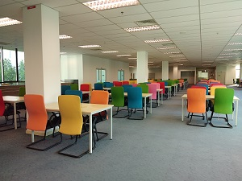
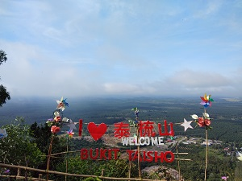
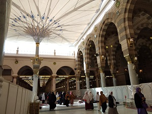

My experiences
Internship
Hiking
Umrah
Internship
During mid term break in semester 3, I went to Perpustakaan Tun Abdul Razak (PTAR) UiTM Seremban 3, Negeri Sembilan for doing industrial training for 1 ½ month on 13 January until 20 February. I choose PTAR UiTM Seremban 3 as my place for industry training because it was located near to my hometown. However, I stayed at the collage because it is more convenient to go work before 8 a.m. and end at 5 p.m.
PTAR Seremban 3 is one of the branches in UiTM Negeri Sembilan. PTAR Seremban 3 has started operating on 2nd February 2014. However, this library open to the users on 3rd March 2014. It has two level in total that can place about 900 users in one time. First level provided reference materials such as journals, dictionaries, and magazines. There also has a reading corner for those ho want to read the newspaper.
I need to follow the timetable that was given by the supervisor for daily tasks during industrial training. Every day, I have to write a report in a book log report about daily task that has been done. Then, a signature from the supervisor was needed as an evidence for my daily task. I have learnt lots of lesson and new things during industrial training such as doing book shelving, copy cataloguing, make a poster for library event, and many more. I have improved my time management in daily life and adopt new skills.
Hiking
Every semester break, my friends and I went hiking Taisho Hill located at Bahau, Negeri Sembilan. The Taisho Hill’s height is around 700 meters, it takes 30 minutes to reach the summit. Hiking Taisho Hill is suitable for all ages from kids until elderly people. It is not too extreme or too challenging and it safe as long as we always be careful. Click HERE for the location.
Hiking in the morning give us the opportunity to see the view from the top of Taisho Hill with a background of clouds. We can see the view of sunshine in the morning and also evening. The scenery and air at the summit are very beautiful and refreshing. There are 3 hiking trails that people can take to reach the top. We can choose any of them as long as we follow the correct path.
Hiking is a healthy activity we can do with our family and friends. We could see and appreciate the beautiful nature that could not see from the down. Enjoying panoramana from the summit make us feel calm from stressing out about certain matters and release tensions.
Umrah
In 2018, my family and I went to Mecca to performing Umrah. We went there for 14 days (2 weeks). when we entering Masjid al Haram, we begin the tawaf which means going around the Kaaba for 7 times. Then, we continue with doing ‘Saie’ from ‘Safa’ to ‘Marwa’ rapidly for 7 times. The temperature there are not same as Malaysia because Saudi Arabia is hot and dry. The environment made me feel very calm even there were thousands of people from variety of country was around. We also went to ‘ziarah’ which is visiting places associated with Islam such as Jabal Noor, Jabal Thawr, Mount Arafah, and Mina.
Then, we went to Madinah for 4 days after performing Umrah. The environment in Madinah is quite different rather than Mecca. Madinah is a peaceful place and very relaxed, we have plenty of times to pray and make duas in Masjid Nabawi since there are no Tawaf to do here. We also can make some new friends from various country such as people from China, India, Turkey, and all country around the world. Date market is one of popular place that sell variety of dates available only in Saudi Arabia.
Leaving Mecca and Madinah are the hardest thing for everyone once they went to this kind of place. We went home and wishing to come back again next time.